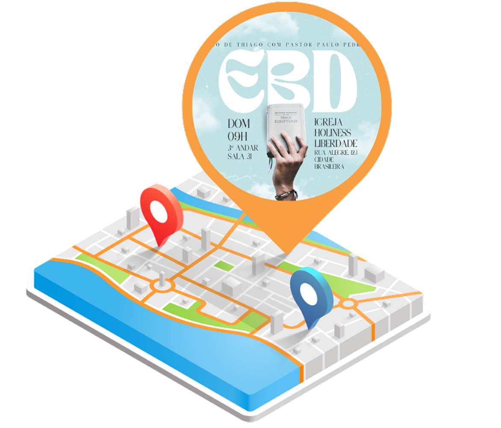

E disse-lhes: "Vão pelo mundo todo e preguem o evangelho a todas as pessoas.”
Marcos 16:5
Missionario
Louvorzão
Evangelismo
Retiros
EBD
Descubra novos eventos pertos de você
Fique por dentro de todos eventos que ocorrem na sua cidade e participe ainda mais de comunhãos com irmãos em
Cristo

Divulgue seus eventos e espalhe o amor de Deus
Aumente a popularidade e divulgação de seus eventos espalhando ainda mais o amor de nosso Deus
Conheça e entre em contato com Missionarios de todo o mundo
Aumente a popularidade e divulgação de seus eventos espalhando ainda mais o amor de
nosso Deus
Sobre mim
Olá! Bem-vindo ao HolyFire.
A ideia deste
site nasceu após um momento de reflexão sobre o amor de Cristo e como eu Gabriel Akira tive meu primeiro contato
com Ele. Foi através de um retiro cristão que tive meu primeiro encontro verdadeiro com Deus, uma experiência
que transformou completamente minha vida.
Acredito que eventos cristãos têm o poder de criar momentos de conexão profunda com Deus e com outras pessoas
que compartilham da mesma fé. São oportunidades únicas para adoração, aprendizado e crescimento espiritual.
Meu objetivo é divulgar eventos que possam tocar corações assim como o meu foi tocado, criando um espaço onde
pessoas possam encontrar informações sobre retiros, conferências, shows de louvor e muito mais.